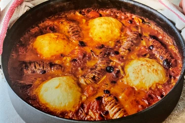

Sausage Casserole
- 60 minutes
- Serves 4
meal
- Cumberland sausages6
- Potatoes800g
- Wholegrain mustard2 tsp
- Large carrots2
- Leeks2
- HP Sauce3 tbsp
- Mixed beans2 tins
- Plum tomatoes1 tin
- Place the sausages in a large non-stick casserole pan on a medium-high heat with 1 tablespoon of olive oil and brown for 10 minutes, turning regularly, then remove to a plate, leaving the pan on the heat.
- Meanwwhile, peel the potatoes, chop into even-sized chunks and cook in a large pan of boiling salted water for 15 minutes, or until tender, then drain and leave to steam dry.
- Mash well with half the mustard, then season to perfection.
- Trim, wash and chop the carrots and leeks into 2cm chunks.
- Stir into the fat in the pan and cook for 15 minutes, or until softened, stirring regularly, and adding a splash of water if needed.
- Stir the HP sauce and remaining mustard into the veg, then pour in the beans, juice and all.
- Add the tomatoes, breaking them up with the spoon, then stir in 1 tin's worth of water.
- Bring to the boil and cook for another 10 minutes, then season to perfection.
- Preheat the grill to high and score the sausages at 1/2cm intervalsand sit them cut side up in the stew.
- As soon as the mash is cool enough to handle, divide it into four compact balls, push them into the stew and brush with 2 tablesponons of oil.
- Grill on the top shelf of the oven for 15 minutes or until golden and bubbling.